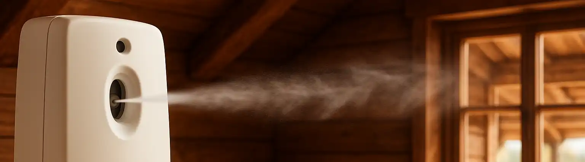

Baru Beli Pewangi Ruangan Otomatis? Begini Cara Pemasangan dan Setting Awalnya

Pewangi ruangan otomatis kini semakin populer dan terjangkau, tidak lagi hanya ditemukan di tempat komersial. Jika Anda baru saja membelinya, jangan bingung! Proses pemasangan dan setting awalnya sangat mudah.
Isi Paket Pembelian
Biasanya, dalam satu paket Anda akan mendapatkan satu unit alat (device), satu kaleng refill, dan terkadang sudah termasuk baterai AA.
Cara Menyetel Awal Alat Pewangi Otomatis
- Pasang Baterai: Buka penutup alat dan pasang baterai sesuai kutub positif dan negatif. Beberapa produk menyertakan baterai dengan segel pita merah; cukup tarik segel tersebut untuk mengaktifkannya.
- Pasang Refill: Masukkan kaleng pewangi (refill) ke dalam alat. Pastikan nosel penyemprot mengarah ke lubang keluar pada device.
-
Atur Timer: Cari saklar pengatur waktu (timer). Pengaturan ini menentukan seberapa sering alat akan menyemprot.
- Interval lebih lama (angka besar): Semprotan lebih jarang, cocok untuk ruangan kecil atau aroma yang lembut.
- Interval lebih cepat (angka kecil): Semprotan lebih sering, cocok untuk ruangan besar atau jika menginginkan wangi yang lebih kuat.
Tips Penting Penggunaan
- Arahkan ke Dalam Ruangan: Jangan arahkan semprotan ke pintu atau jendela agar wanginya tidak terbuang.
- Penempatan yang Aman: Letakkan di tempat yang tinggi, hindari posisi sejajar dengan wajah atau di dekat sumber api.
- Gunakan Baterai Isi Ulang: Untuk penggunaan jangka panjang, pertimbangkan memakai baterai cas Ni-MH agar lebih hemat.
Dengan langkah-langkah di atas, pewangi ruangan otomatis Anda siap digunakan. Mudah, bukan? Simak video singkat di bawah ini untuk melihat cara mencabut segel baterai dengan benar.